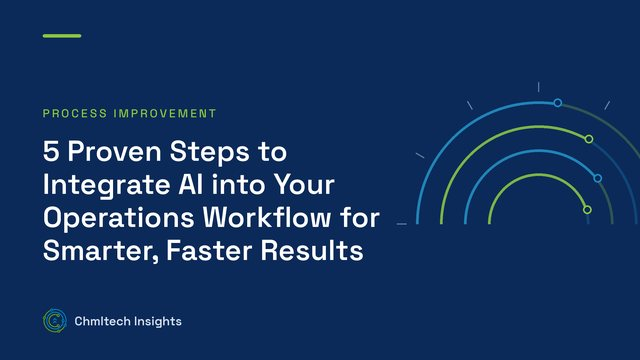
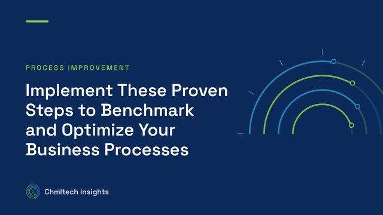

Inventory management practices
We review stocking policies, reorder points and SKU segmentation to improve inventory turns and accuracy and free up cash.
Home / Industries / Distribution & Warehousing
Industries · Distribution & Warehousing
Improve cash flow and keep pace with customer demand
We help distributors raise inventory turns and accuracy, recover lost time in the DC and free up cash. We work on your floor, with your team, so the improvements stick.
Overview
Customers expect faster delivery, more SKUs and perfect orders, while carrying costs and labour shortages squeeze profitability. Too often the cash a distributor needs is tied up in slow-moving inventory, and the time it needs is lost to searching, walking and rework. We take a hands-on approach, working in your distribution centre alongside your people to observe receiving, putaway, picking and shipping as they happen. Together we apply sound inventory management practices and Lean methods to improve inventory turns and accuracy, free up working capital and build a culture of continuous improvement.
Industry challenges
Excess and slow-moving stock inflates carrying costs and limits the working capital available to grow.
When system counts do not match the shelf, you get mispicks, stockouts, emergency orders and lost customer trust.
Poor slotting, unclear priorities and waiting for information hide capacity in receiving, picking and shipping.
Smaller, more frequent orders and tighter delivery windows put pressure on every step from order to dock.
Interactive demo
Click the diagrams to explore each step.
How we help
We review stocking policies, reorder points and SKU segmentation to improve inventory turns and accuracy and free up cash.
We define measures for service levels, productivity, speed and quality, such as fill rate, order accuracy and dock-to-stock time, and set your baseline.
We observe work as it happens to uncover walking, searching, waiting and rework, and reveal the capacity you already have.
We map receiving, putaway, picking and shipping flows, then improve slotting and layout so fast movers are easy to reach.
We identify and help implement simple process improvements that need no new systems, such as pick path changes or visual controls.
We assess change readiness and plan the rollout so your team drives the changes and keeps ownership of their processes.
Typical scenarios
Illustrative examples of the kind of change we work on.
Before: fast-moving SKUs were stored at the back, so pickers walked the full building on most orders.
After: velocity-based slotting put fast movers near packing and shortened most pick paths.
Before: annual physical counts and frequent mispicks left the system out of step with the shelf.
After: ABC cycle counting and location discipline at putaway kept records accurate year round.
Before: reorder points were set once and never reviewed, building up excess stock on slow SKUs.
After: SKU segmentation and regular reorder reviews reduced excess stock and freed up working capital.
Outcomes
Why Chmltech
We do not leave you with a report. We work on your floor, with your people, through every step of the change.
We get to know your team and observe the real working environment, which is where lost time and accuracy problems show up.
We look at staff performance, management behaviour and use of technology, including your WMS or ERP, not just process maps.
Your people drive the changes and own their processes, so improvements continue after the project ends.
Questions
Usually not at first. Many gains come from slotting, location discipline, cycle counting and clear priorities. Where your WMS or ERP is limiting you, we help define what you need before you buy.
We segment SKUs by velocity and value, then set stocking policies for each group. That way you cut excess on slow movers while protecting fill rate on the items customers rely on.
We plan observations and changes around your volume calendar and usually avoid major layout changes during peak periods.
Yes. The same methods apply to distributors, wholesalers and third-party logistics providers. We adapt KPIs to whether you are serving your own customers or clients' customers.
Free learning
From our insights

Process Engineering
Capital and operating cost estimation for process plants: AACE classes, six-tenths rule, Lang and module factors, CEPCI, cost of manufacture, NPV and…

Process Improvement
Discover 5 proven steps to integrate AI into your operations workflow to improve efficiency, reduce costs, and make smarter data-driven decisions.

Process Improvement
Learn how to benchmark processes, identify bottlenecks, and improve efficiency using data-driven workflow analysis and performance metrics.
Book a strategy call. We will talk through your goals, pain points and where AI, systems or process work can make the biggest difference.